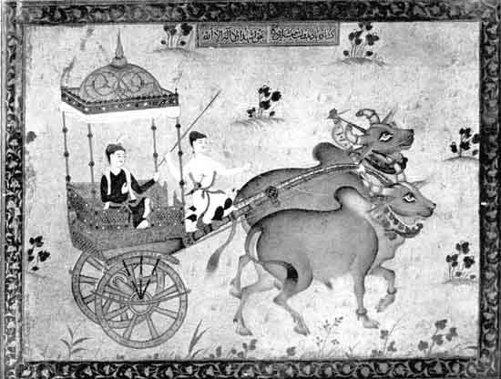
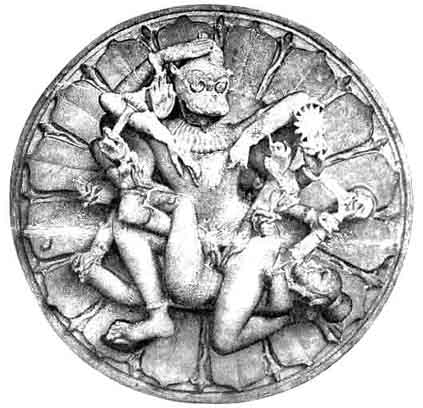

Selected Examples of Indian
Painting and Sculpture
BY O. C. GANGOLY
III A BULLOCK CHARIOT
BY ABUL HASSAN
Indo-Persian School
(Collection of Mr. Sitaram Shah, Benares)

We have here a magnificent study of a Prince riding in a car, the descendant of the old Indian ratha1 driven by a pair of bullocks, –as seen through the imaginative vision of a Persian artist in India, –and recorded in the gorgeous and transfiguring language of his decorative art. A homely pair of Indian bulls, with all the rich array of bells, anklets, and golden clasps on the horns, rivaling the rich robes of the Prince himself, is here sublimated to an atmosphere of romantic tales, –while the prosaic background of a dusty Delhi street scene is obliterated and replaced by a background of gold-brown tone, embroidered by delicate foliages and lively sprays of flowering plants judiciously spread over the vacant spaces, –adding a flavour of romance and imaginative richness to the whole composition. Even the driver, as he waves his thin airy stuff in pretended chastisement of the bulls, poses in an attitude of grace and beauty worthy of a fairy tale. A homely street scene is sublimated to an atmosphere of romance and of mystery. The pair of bulls, portrayed in their characteristic type and habit, with great vigour and realism, has wonderful aesthetic qualities in the magnificent contours of their backs echoed and silhouetted against each other and drawn with an unsurpassing delicacy and a wonderful feeling for animal form. A very peculiar feature is their lively and expressive pair of heads with large eyes which seem to suggest and symbolize a brave, courageous outlook, even a curiosity looking forward to any kind of journey, however laborious or adventurous. As compared with the treatment accorded to the animals, rendered with an astonishing realism, yet endowed with sympathy, humour and romance, the faces of the human charm and reticence are relatively flat and lifeless, the artist being more interested in the lively pair of mounts than in their human riders. The name and signature of the artist, Abul Hassan, are given on the front panel of the car opposite the left knee of the Prince. He was the son of the celebrated Persian artist, Aqa Rizza of Herat, and obviously belonged to the well-known Herat School of Persian Painting which flourished under the patronage of the Safavid dynasty (1502-1722). As will appear from the following extract from the Tuzuk-i-Jahangiri, the memoirs of Jahangir , this artist and his father were attached to the Great Moghul from his infancy:-
"On this day Abul Hassan, the painter, who has been honoured with the title of Nadir-uz-Zaman, drew the picture of my accession as the frontispiece to the Jahangir-nama, and brought it to me. . . His father, Aqa Rizza of Heart, at the time when I was Prince, joined my service. He (Abul Hassan) was a Khanzada of my Court. . . My connection was based on my having reared him. From his earliest years up to the present time, I have always looked after him, till his art has arrived at this rank. Truly he has been Nadir-uz-Zaman (‘wonder of the Age’).
The temper, outlook and the technique of the Moghul School proper have to be distinguished from those of the imported Persian School which Akbar set his court artists to follow as models. In the earlier phase, the Indian painters of the Moghul Court slavishly followed the manners and mannerism of the Persian School, represented at the Moghul Court by several Persian artists of great distinction, of which Abul Hassan was undoubtedly a talented exponent. But the indigenous Moghul School, very eclectic in its outlook, and chiefly represented by indigenous Indian artists, soon outgrew the influences of their Persian masters and founded a style aggressively realistic in vision as well as in technique–which is clearly distinguished from the decorative language and the romantic colour schemes of the Persian School. Realism in the sense illustrated in the Moghul portraits was unknown in the Persian School, while the richly ornamental and the conventional rendering of trees and plants and human portraits is wholly absent from the Moghul School proper. The term ‘Indo-Persian’ therefore accurately suggests the quality of the works of Persian artists in India and those of the Indian artists who followed for a time the conventions and mannerisms of the Persian masters. The term ‘Moghul School’ on the other hand, is used to designate the native indigenous quality of the works of the Indian artists at the Court of the Moghul Emperor, who developed a new eclectic style, which is a curious amalgam of the Indian, Persian, and European manners. The art of the Moghul Court in its ‘Indo-Persian’ phase is intensely decorative in its technique and richly romantic in its vision, and contrasts clearly with the somewhat-prosaic pedestrian art of the Moghul School. Through this master-piece of Abul Hassan here reproduced, one can glimpse the rich inheritance of the jewel-like radiance and the imaginative fairy lands of the Persian masters, which Akbar and Jahangir bequeathed to the Indian artists of their Imperial Studios.2
IV. DEATH OF HIRANYA-KASIPU
(A ceiling Panel, Temple of Vimal Shah, Mouut Abu.
Medieval School: 1031 A.D.)

When the stories of the puranas, the didactic myths of Brahminical sagas, began to be translated in stone, first during the Gupta period, the seeds of Brahminical sculpture were sown in the fertile soil of a neo-Hindu renaissance, to fructify in a school of sculpture singularly characterized by an energy and vitality and a wonderful power of dramatic expression, which attained its highest perfection between the 8th and the 12th centuries. Of all the pauranic myths! none is more popular with the Indian artist than the story of the demon-king Hiranya-Kasipu, who by merits in another life acquired a boon that he will not meet death at the hand of God, man or animal. The story is also used to illustrate a phase of Hindu religious belief which lays down that whoever worships the divinity, be it in terms of hatred or love, shall attain salvation. The demon-king had thought of Vishnu all his life through his hate, but the divinity did not on that account refuse him the grace of salvation.
Such is the story translated plastically in a remarkably composed marble relief from one of the ceilings of the Temple of Vimal Shah at Mount Abu erected in 1031 A. D. The Nara-simha (man-lion) and the demon-king are pictured in a complicated mortal embrace which gives the pair a physical as well as a spiritual unity (sayujya) from which it is difficult at first to disentangle the figures of two distinct individuals. They combine and coalesce, as it were, to spell out a highly organized design for an intricate monogram–the symbol of the jivatma absorbed in the paramatma. The group itself is placed within the halo of a sixteen-petalled lotus (sodasa-dalapadma) spread in a complete circle rich in its ritualistic symbolism. The halo of the circle assists at a singular dramatic effect–for a circle has no top or base–and one is perplexed for a moment to discover which figure is uppermost and who is the winner of the duel, the demon or its slayer. But the sculptor has not forgotten to furnish the right clue, in the indication of the hand touching the head of the Nara-simha–which indicates the top of the picture–the crown of the composition, and one is pleasantly surprised to discover that the vanquished figure is lying prostrate in a dramatic pose, with his head very significantly placed on the left foot of the Divinity, who kills the king's body to give him the immortality of salvation. In the symbolic language of the Indian religious love, the ambition of the devotee to receive salvation is "to find his refuge in the feet of the divine". This symbolism is pictorially realised with literal faithfulness without hampering the plastic expression. The difficulty of filling up a circle with artistic effect is cleverly surmounted by the three emphatic lines which radiate from the centre, two of which are furnished by the two hands of the man-lion joining near the breast, the third line being provided by the left thigh of the prostrate figure. These three lines break up the circle into three segments. In contrast to these radiating lines, there are a series of converging lines offered by the petals of the lotus which make towards the centre. Thus a rhythm is evolved out of the ebb and flow of two distinct series of lines, one of centrifugal and the other centripetal motion. These help to invest the composition with a quality of movement which is quite independent of the action of the fighting figures. The impact of the combatants finds an echo in the impact of the lines, which balance each other in an unexpected harmony. Seldom has the story of the puranas been told in plastic language of such singular depth of concentration and with such intense dramatic expression. It has the concentration and symbolism of a bija mantra, as well as the expansive suggestiveness of an epic. For sheer terrifying power, or, as Elie Faure has picturesquely put it, "grandiose bestiality", this virile relief puts to shade the classic "shriek in marble" with which we are familiar in the Greek Lacoon.
1
Still surviving in the prosaic ekka still current in the United Provinces.2
An accurate colour facsimile of this miniature is given in Rupam No. 35-36, (July-October 1928.)